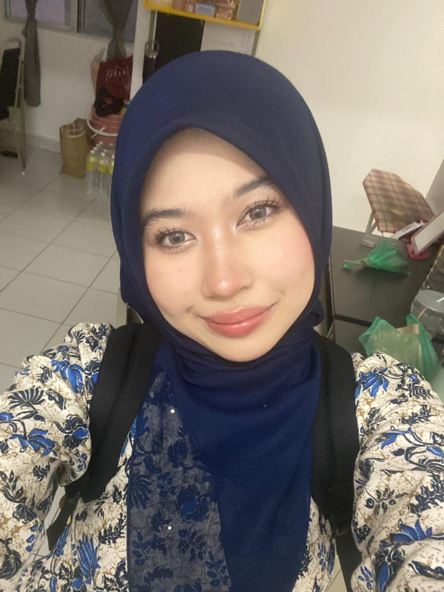

Umur: 22 Tahun
Asal: Selangor
Jawatan: Part Time Staff
Status: Pelajar & Pekerja Sambilan
Saya berasal daripada keluarga yang sederhana dan sedang melanjutkan pelajaran sambil bekerja secara sambilan. Pengalaman bekerja membantu saya menjadi lebih berdikari dan bertanggungjawab.
Didikan keluarga dan pengalaman hidup banyak membentuk diri saya untuk lebih matang, menghargai masa serta sentiasa berusaha memperbaiki diri.
Cabaran terbesar adalah mengimbangi pelajaran dan pekerjaan, namun pengalaman tersebut mengajar saya tentang disiplin dan pengurusan masa yang baik.
Mengurus pekerja.
Memastikan operasi restoran berjalan lancar.
Menjaga kualiti makanan dan memastikan pelanggan berpuas hati.
Mengurus pelanggan pada waktu sibuk dan memastikan semua pekerja bekerjasama dengan baik.
Bila pelanggan berpuas hati dengan servis dan makanan yang disediakan.
Kejujuran, disiplin dan tanggungjawab.
Sentiasa buat kerja dengan ikhlas.
Berikan layanan terbaik kepada pelanggan.
Seorang yang rajin.
Mudah bekerjasama dan mesra dengan orang lain.
Dengar lagu.
Menghabiskan masa dengan kawan-kawan & family.
Berehat.
Tengok wayang.
Keluar makan.
Bila dapat capai target dan melihat orang sekeliling gembira.
Ingin berjaya dalam kerjaya dan memiliki perniagaan sendiri suatu hari nanti.
Semoga restoran terus maju dan dikenali ramai.
Jangan takut mencuba benda baru dan sentiasa berusaha walaupun menghadapi cabaran.
Laksa
Taylor Swift – We Don’t Talk Anymore
Seorang pelajar yang bekerja sambilan sambil mengejar impian masa depan.